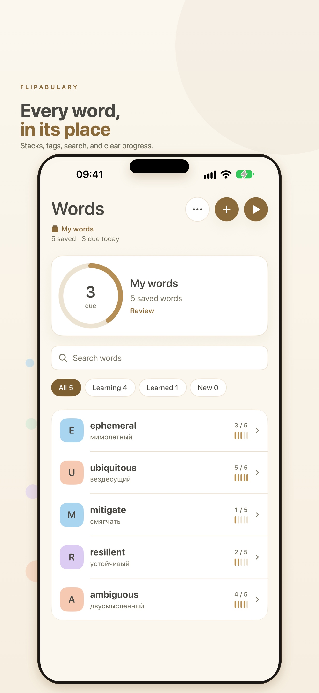
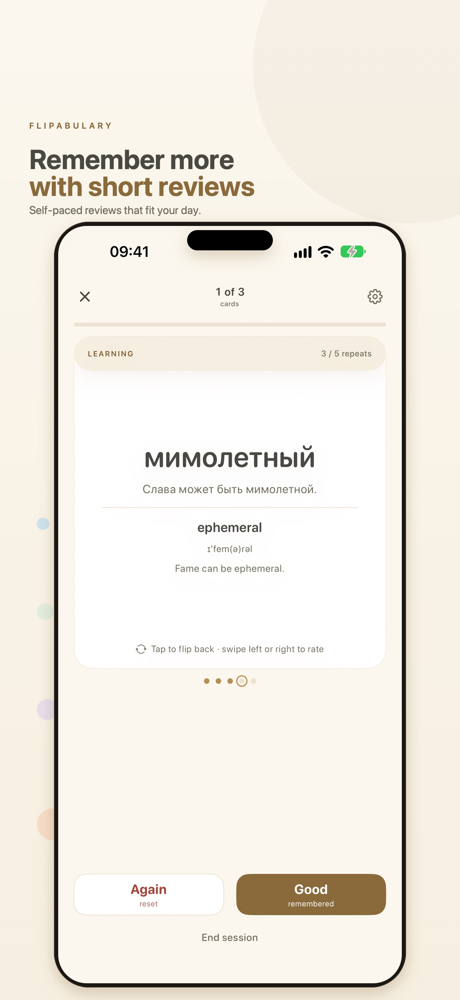

Stacks and tags
Keep separate notebooks for different languages, exams, or projects. Every word belongs to one stack and any number of tags.
Offline vocabulary notebook
Save the words you actually want to keep. Add a translation, an example, and a little context. Then practice in short, self-paced sessions with one simple choice: Again or Good.

Keep separate notebooks for different languages, exams, or projects. Every word belongs to one stack and any number of tags.
Reveal the answer, then choose Again or Good. Learning steps, repeat thresholds, and forgetting rules are yours to tune.
See what is due and which words are next with Summary and List widgets in Small, Medium, Large, and Extra Large.
Optional local notifications remind you when words are ready. No account, no server, no remote push.
Your library stays on your device. Flipabulary does not collect analytics, show ads, or send your words anywhere.
Learning, widgets, and reminders work without a purchase. Six optional one-time tips support development and unlock nothing.
